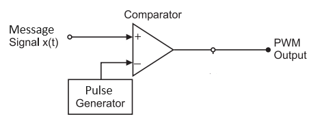

Note: Use the input fields to enter the message frequency and the triangular wave carrier frequency.
Step 1: Click the "Generate Message" button to generate the input message signal.
Step 2: Click the "Generate Carrier" button to generate the carrier signal. The carrier frequency must be higher than the message frequency. You can change both the message and carrier frequencies using the input fields.
Step 3: Click the "Generate PWM Signal" button to generate the Pulse Width Modulated (PWM) signal.

Instructions for Pulse Width Demodulation
Step 1: Ramp generator produces a ramp signal that either increases or decreases linearly. And Converts pulse width information into a varying voltage. Adder combines the ramp and PWM signals into a composite signal carrying the original information and then low-pass filtering
Step 2: You can Demodulate the PWM Signal clicking on the 'Demodulate PWM Signal' button